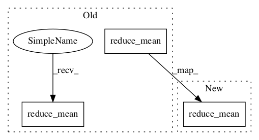

fee9a89624746a09024ddaf8582a3a0fd86bffa4,tensorlayer/cost.py,,absolute_difference_error,#Any#Any#Any#Any#,180

Before Change
loss = tf.reduce_mean(tf.reduce_sum(tf.abs(output - target), 1), name=name)
elif output.get_shape().ndims == 3: // [batch_size, w, h]
if is_mean:
loss = tf.reduce_mean(tf.reduce_mean(tf.abs(output - target), [1, 2]), name=name)
else:
loss = tf.reduce_mean(tf.reduce_sum(tf.abs(output - target), [1, 2]), name=name)
elif output.get_shape().ndims == 4: // [batch_size, w, h, c]
if is_mean:
loss = tf.reduce_mean(tf.reduce_mean(tf.abs(output - target), [1, 2, 3]), name=name)
else:
loss = tf.reduce_mean(tf.reduce_sum(tf.abs(output - target), [1, 2, 3]), name=name)
else:
raise Exception("Unknow dimension")
After Change
if is_mean:
loss = tf.reduce_mean(tf.reduce_mean(tf.abs(output - target), axis), name=name)
else:
loss = tf.reduce_mean(tf.reduce_sum(tf.abs(output - target), axis), name=name)
return loss
def dice_coe(output, target, loss_type="jaccard", axis=(1, 2, 3), smooth=1e-5):
In pattern: SUPERPATTERN
Frequency: 4
Non-data size: 3
Instances
Project Name: tensorlayer/tensorlayer
Commit Name: fee9a89624746a09024ddaf8582a3a0fd86bffa4
Time:
Author: null
File Name: tensorlayer/cost.py
Class Name:
Method Name: absolute_difference_error
Project Name: tensorlayer/tensorlayer
Commit Name: fee9a89624746a09024ddaf8582a3a0fd86bffa4
Time:
Author: null
File Name: tensorlayer/cost.py
Class Name:
Method Name: mean_squared_error
Project Name: MorvanZhou/Reinforcement-learning-with-tensorflow
Commit Name: 5cccb930b25c317fde80199a1add9864725c60be
Time:
Author: null
File Name: contents/12_Proximal_Policy_Optimization/simply_PPO.py
Class Name: PPO
Method Name: __init__
Project Name: chris-chris/pysc2-examples
Commit Name: 48d178cfbb60e5b0004f63b2eca37b2449bb6c67
Time:
Author: null
File Name: a2c/a2c.py
Class Name: Model
Method Name: __init__